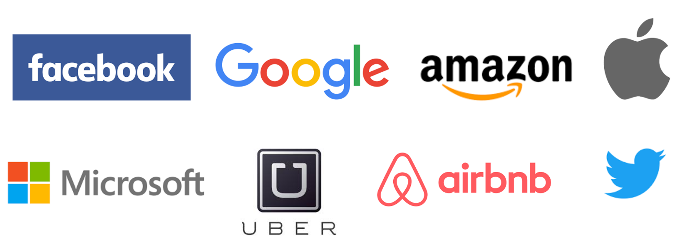

How to Get Hired by Top Tech Companies
Posted February 18, 2017 by Supasate Choochaisri
Disclaimer
เนื้อหาในบทความนี้เป็นมุมมองของผู้เขียนเพียงอย่างเดียว ไม่มีส่วนเกี่ยวข้องกับนายจ้างปัจจุบันหรืออนาคต เนื้อหาทุกอย่างเป็นเพียงแนวทางทั่วไป ซึ่งอาจแตกต่างไปในแต่ละบริษัทหรือตำแหน่งงาน
คิดว่าหลายๆคนคงอยากรู้ว่าการจะเข้าไปทำงานในตำแหน่งวิศวกร (Engineer) กับบริษัทใหญ่ๆระดับโลก เช่น Facebook Google Amazon Microsoft Apple ฯลฯ นั้นต้องทำอย่างไรบ้าง ผมได้มีโอกาสสัมภาษณ์งาน และกำลังจะเข้าทำงานกับหนึ่งในบริษัทข้างต้น จึงอยากมาแชร์ประสบการณ์นี้กันครับ
สไลด์ประกอบบทความนี้ดูได้ที่ https://www.slideshare.net/supasate/how-to-get-hired-by-top-tech-companies
เป้าหมาย
เนื่องจากว่าภรรยาของผมนั้นอยากไปลองใช้ชีวิตอยู่ที่อเมริกา เป้าหมายตั้งต้นของผมเลยก็คือสมัครงานกับบริษัทที่อเมริกา (ใครกำลังคิดว่ากลัวเมีย ขอให้เปลี่ยนไปใช้คำว่าเคารพเมียแทนนะครับ) ก็เลยมองหาว่าถ้าต้องไปแล้วก็อยากทำงานกับบริษัทที่มีอย่างน้อย 4 ใน 7 คุณสมบัติต่อไปนี้
- เป็นองค์กรที่มี Engineering Culture
- เป็นองค์กรที่มีสภาพแวดล้อมเหมาะแก่การพัฒนาตัวเอง เปิดโอกาสให้ลองสิ่งใหม่ๆที่สนใจ
- เป็นองค์กรที่เต็มไปด้วยคนที่เก่งกว่าเรา
- เป็นองค์กรที่ผมชอบใช้ผลิตภัณฑ์ของเค้า
- เป็นองค์กรที่เน้นด้านการศึกษา
- เป็นองค์กรที่สนับสนุนให้มีส่วนร่วมกับชุมชนโอเพ่นซอร์ส
- เป็นองค์กรระดับต้นๆของโลกหรือเป็นองค์กรที่มีการเติบโตสูง
ผลลัพธ์
ผมเริ่มยื่นสมัครงานเดือนกุมภาพันธ์ 2559 แต่พบว่าหลายอย่างนั้นยากกว่าที่คิดโดยเฉพาะปัญหาเรื่อง Visa (จะกล่าวต่อไป) ซึ่งสุดท้ายแล้วผมยังไม่สามารถเข้าอเมริกาได้ แต่ก็ได้งานที่ Facebook สาขาสิงคโปร์แทน โดยกว่าจะได้งานใช้เวลาเกือบ 1 ปี (รู้ผลว่าผ่านคือ มกราคม 2560)
สิ่งที่ได้เรียนรู้ก่อนที่จะถูกเรียกสัมภาษณ์งาน
บทเรียนที่ 1 การเข้าไปทำงานที่อเมริกานั้นยากมาก
ปีที่สมัคร 2559 ก่อนดอนัลด์ ทรัมป์ขึ้นเป็นประธานาธิบดี
การที่คนต่างชาติจะเข้าไปทำงานที่อเมริกาได้นั้นต้องมี Visa ทำงาน ซึ่งขอพูดคร่าวๆแต่ไม่ลงรายละเอียดมากดังนี้
- H-1B (Specialty Occupation) อันนี้เป็นท่ามาตรฐานสำหรับคนทำงานสายพัฒนาซอฟต์แวร์ โดยจะใช้ Visa นี้ได้นั้น ต้องสัมภาษณ์งานกับบริษัทให้เค้ารับเราเสียก่อน หลังจากนั้นบริษัทจะไปยื่นขอ Visa ให้เรา ซึ่ง Visa ก็จะมีจำกัดมาก (จะพูดถึงในหัวข้อหลัง) ทำให้ต้องไปจับฉลากว่าจะได้ Visa มั้ยอีกต่อ โอกาสได้อยู่ประมาณ 30%
- L-1 (Intracompany Transfer) อันนี้ให้ทำงานกับบริษัทที่มีสาขาอยู่ต่างประเทศก่อนอย่างน้อย 1 ปี แล้วบริษัทยินยอมให้ย้ายไปสาขาที่อเมริกา
- E-1/E-2 (Treaty Trader/Treaty Investor) อันนี้สำหรับคนเอาเงินไปลงทุนค้าขายหรือเปิดบริษัทที่อเมริกา เพื่อให้เกิดการจ้างแรงงานคนอเมริกา ใช้เงินอย่างน้อยประมาณ 2-3 ล้านบาทขึ้นไปสำหรับเปิดบริษัทและจ้างแรงงาน และต้องมีเหตุผลที่เพียงพอว่าเงินนั้นเพียงพอต่อการรันบริษัท (จริงๆถ้ารวยหน่อยก็มี E-5 สำหรับลงทุนในโครงการรัฐบาล เพื่อก่อให้เกิดการสร้างอาชีพอย่างน้อย 10 คนต่อนักลงทุน 1 คน เช่น โครงการสร้างรางรถไฟข้ามรัฐ แต่อันนั้นจะประมาณ 17- 35 ล้านบาทต่อคน)
- F-1 (Student) อันนี้ถ้าไปเรียนต่อที่อเมริกาในสาขาที่เกี่ยวข้อง เรียนจบจะได้ Visa ทำงานได้เลยทันที แล้วค่อยให้บริษัทไปยื่น sponsor H-1B ต่อในปีถัดๆไป
ซึ่งถ้าจะไปทำงานที่อเมริกาไม่ว่าจะ Visa ไหนก็จะมี trade-off เรื่อง ความสามารถ ดวง เวลา เงิน
กรณีของผมคืออยากได้ H-1B หรือ L-1
บทเรียนที่ 2 การสมัครผ่านหน้าเว็บของบริษัทแทบจะไม่มีประโยชน์
แต่ละบริษัทก็จะมีหน้า careers หรือ jobs ที่เราสมัครเข้าไปได้ แต่ว่าบริษัทระดับโลกคนสมัครกันเป็นล้านคน โอกาสที่เราจะได้รับเลือกนั้นมีน้อยมาก โดยจะมี 2 กรณีใหญ่ๆถ้าสมัครผ่านหน้าเว็บคือ
-
หลุมดำ (Black hole) เคสนี้คือยื่นสมัครไป แล้วจะได้เมลตอบรับอัตโนมัติว่าเราสมัครแล้ว แต่ไม่มีการติดต่อกลับมาอีกเลย เหมือนกับหายไปในหลุมดำ
-
ปฏิเสธการเรียกสัมภาษณ์ เคสนี้คือมีการติดต่อกลับมาแต่จะบอกว่าคุณสมบัติเรายังไม่ตรงกับตำแหน่งที่เค้าต้องการ (ทั้งๆที่ผมก็สมัครตำแหน่ง Software Engineer ปกติ) เลยขอโทษที่ไม่สามารถเรียกเราสัมภาษณ์ได้ ซึ่งจริงๆแล้วผมได้ลองสอบถามเพื่อนๆที่สามารถไปสอบถามฝ่าย HR ของบางบริษัทได้ ก็ได้ใจความทำนองเดียวกันว่าถ้ายังไม่มี Visa ทำงาน บริษัทก็ยังไม่ค่อยอยากเสียเวลารับคนนอกประเทศ เพราะต้องไปวัดดวงจับฉลาก Visa อีก (เว้นแต่ว่าคนนั้นจะ profile เทพและเค้าต้องการตัวจริงๆ เช่น เป็นผู้สร้างเฟรมเวิร์คดังๆ)
บางบริษัทก็มีแคมเปญการรับสมัครงานที่สร้างสรรค์ เช่น Uber จะมี Code On The Road: Hacker Challenge ซึ่งปีก่อนผมไปอเมริกา แล้วเรียก Uber ระหว่างที่นั่งอยู่บนรถ บนมือถือก็มีเด้งขึ้นมาว่าสนใจทำ Hacker Challenge มั้ย ก็เลยทดลองทำดู มีโจทย์แนวอัลกอริทึม 3 ข้อเป็น multiple choice เช่น ให้หา Big O, ให้หาจุดผิดในโค้ด, ให้หาว่าควรใช้ data structure แบบไหน เป็นต้น ซึ่งผมทำผ่านเค้าก็จะถามว่าสนใจร่วมงานกับ Uber มั้ย ผมก็ตอบสนใจและส่งรายละเอียดตำแหน่งที่สนใจไป แต่สุดท้ายแล้วก็หลุมดำ ไม่มีติดต่อกลับมาเลย (แม้ว่าจะส่งเมลไปสอบถามซ้ำก็ตาม)
ผมสมัครไปเยอะพอสมควร แต่ก็เป็นหลุมดำ หรือถูกปฏิเสธการเรียกสัมภาษณ์ทุกที่ที่สมัครผ่านหน้าเว็บไซต์ไป
ประเภทหลุมดำ
- Staff Engineer - Distributed systems software @ VMWare
- Software Engineer @ Autodesk
- Senior Software Developer @ IBM - StrongLoop
- Software Engineer, Palo Alto @ HackerRank
- Software Engineer - Evolved Network OS @ Cisco
- 2 Software Engineer positions @ Uber
- Software Engineer @ Arista
- Software Engineer, Product @ Twitter
ประเภทถูกปฏิเสธเรียกสัมภาษณ์
- Software Engineer, Front End @ Google, New York
- Software Engineer @ Google, New York
- Software Engineer, Tools & Infrastructure @ Google, Zurich
- Software Engineer @ Google, Japan
- Strategic Customer Engineer, Google Cloud Platform @ Google, Singapore
- 3 Software Engineer positions @ Coursera
- 3 Engineering positions @ Slack
- Full Stack Engineer @ Udacity
- Full Stack Software Engineer - iTunes U @ Apple
- Software Engineer @ Quora
- Software Developer @ Khan Academy
แต่ก็เคยอ่านเจอว่ามีคนสมัครผ่านหน้าเว็บแล้วได้เหมือนกัน แต่โอกาสน้อยมาก และบางคนสมัครเป็นร้อยบริษัททีเดียว
บทเรียนที่ 3 การไปเรียนต่ออาจเป็นทางที่ง่ายที่สุด
เพื่อนผมที่อเมริกาแนะนำเลยว่าให้เรียนต่อก่อนดีกว่าถ้าอยากทำงานที่อเมริกา เพราะจะได้ Visa F-1 และได้สิทธิทำงานทันทีหลังเรียนจบ ซึ่งตอนแรกผมก็จะยังคิดว่าสมัครงานไปเลยคงไม่ยากขนาดนั้น แต่หลังจากสมัครมาเกือบ 1 ปีถึงได้เข้าใจเลยว่าการไปเรียนต่อน่าจะเป็นทางที่ง่ายสุดแล้วจริงๆ เพราะถ้าเมื่อใดเรามี Visa ที่ทำงานที่อเมริกาได้ บริษัทจะเรียกคุณสัมภาษณ์ง่ายขึ้นมากทันที
บทเรียนที่ 4 การให้คนในองค์กรแนะนำให้ (refer) จะทำให้ resume ขึ้นมาให้อยู่บนสุดของกองใบสมัคร
ในแต่ละบริษัทส่วนใหญ่พนักงานจะได้โบนัสถ้าสามารถช่วยหาคนมาทำงานและผ่านโปรได้ ซึ่งถ้าเรารู้จักใครเราอาจขอให้เค้าช่วย refer ให้เราได้ถ้าเค้าเชื่อว่าเราน่าจะมีโอกาสผ่านการสัมภาษณ์
ผมก็เช่นกันได้ใช้วิธีให้เพื่อนในแต่ละบริษัทที่รู้จักช่วย refer ให้ และทำให้ได้รับเมลติดต่อกลับมาทันที
ดังนั้นการทำความรู้จักกับคนเยอะๆนั้นสำคัญมาก
บทเรียนที่ 5 การให้คนในองค์กรแนะนำให้ (refer) ไม่ได้หมายความว่าจะได้โอกาสในการสัมภาษณ์
ความยากยังไม่จบครับ ถึงแม้จะมีคน refer เราให้แล้ว แต่สุดท้ายผมก็โดนหลายที่ตอบว่าทักษะเราไม่ตรงตำแหน่งงานอยู่ดี แต่ก็ยังยืนยันครับว่าการให้คน refer ยังเป็นวิธีที่ดีที่สุดอยู่ดี
บทเรียนที่ 6 วิธีการอื่นๆเพื่อให้ได้โอกาส (แต่ก็ไม่ง่าย)
Google Code Jam และ Facebook Hacker Cup เป็นอีกช่องทางนึง ถ้าเราทำคะแนนได้ดีทาง Google หรือ Facebook ก็จะติดต่อมา อันนี้ยืนยันเพราะเพื่อนผมที่เข้าถึงรอบ 3 ของ Google Code Jam ได้รับการติดต่อเพื่อสัมภาษณ์เลย
การไปเข้าร่วมโปรเจค Open Source ที่ดังๆก็มีส่วนช่วยเช่นกัน แต่ก็ควร contribute แบบมี impact หน่อยไม่ใช่แค่แก้สะกดผิดหรือบั๊กง่ายๆ เพราะเป็นส่วนหนึ่งให้บริษัทเห็นว่าเราสามารถทำงานกับ Codebase ขนาดใหญ่ได้ แต่ถึงแม้แก้เล็กๆน้อยๆก็อาจมีบริษัทอื่นติดต่อมาได้ (มีน้องที่รู้จักไปแก้เรื่องสะกดผิด แล้วมีบริษัทติดต่อมา คาดว่าเค้ากวาดจากคนที่มีรายชื่ออยู่ใน contributors แล้วติดต่อหมด)
การเข้าร่วมโครงการแข่งขันหรือ Hackathon ต่างๆ อันนี้ก็มักจะมีคนมาติดต่อให้ไปร่วมงานได้ถ้าเห็นฝีมือเราดี
การเข้าร่วม Networking event ต่างๆ ยิ่งรู้จักคนมาก ก็มีโอกาสที่เค้าจะช่วย refer ให้เราได้
บทเรียนที่ 7 ช่วงเวลาที่สมัครสำคัญมาก
อันนี้จะเกี่ยวกับเรื่อง Visa H-1B ซึ่ง Visa นี้ปีนึงจะมีโควต้าแค่ 85,000 คนเท่านั้น โดย 20,000 คนแรกจะจับฉลากจากคนที่เรียนจบในอเมริการะดับปริญญาโทขึ้นไป แล้วคนที่พลาดจะยังได้เข้าไปจับฉลากกับโถรวมทั้งหมดอีก 65,000 คน (ส่วนถ้าเราไม่ได้เรียนที่นั่น ก็ถูกเข้าจับในโถ 65,000 คนครั้งเดียว)
โดยทางรัฐบาลสหรัฐจะเริ่มรับคำร้องขอ Visa วันที่ 1 เม.ย. ของทุกปี และส่วนใหญ่ก็จะเกินโควต้าจนต้องปิดรับภายในเวลาสัปดาห์เดียว แล้วนำไปจับฉลาก (โอกาสจับได้เราอยู่ที่เพียงประมาณ 30 - 40%)
ดังนั้นบริษัทที่จะ sponsor Visa ให้เรานั้นต้องเตรียมเอกสารทั้งหมดให้เสร็จภายในช่วงเดือน มี.ค. ซึ่งบริษัทต้องตกลงรับเข้าทำงานเสร็จแล้ว
และบริษัทใหญ่ๆใช้เวลาในการสัมภาษณ์ 1 - 2 เดือน (จะกล่าวต่อไปภายหลัง) ดังนั้นช่วงเวลาที่เริ่มสมัครที่ดีที่สุดคือ ช่วงเดือน ตุลาคม ถึง มกราคม
ส่วนบริษัท startup ก็จะไม่ค่อยอยาก sponsor visa มาก เพราะบริษัทเล็กต้องการเคลื่อนตัวเร็ว แต่กว่าจะได้เราไปทำงานต้องรอนานมาก (ต่อให้จับฉลากได้ Visa แล้วก็ต้องไปขอใบอนุญาตทำงาน กว่าจะเริ่มงานได้คือ 1 ต.ค. เลยทีเดียว) เค้าเลยเอาคนในประเทศเค้าดีกว่า เริ่มงานได้เลย แต่บริษัทใหญ่ๆเค้ายังขอโกยคนเก่งเก็บไว้ก่อนดีกว่าไม่รีบมาก
การเตรียมตัวสัมภาษณ์งาน
เคสของผมมีโอกาสได้สัมภาษณ์ครั้งแรกกับ Google ในเดือน ก.พ. 59 ผ่านสัมภาษณ์รอบแรก แต่ตกสัมภาษณ์รอบที่ 2 และกว่าจะไปได้โอกาสสัมภาษณ์อีกครั้งกับ Facebook คือเดือน พ.ย. 59 เลย ซึ่งรูปแบบมีความคล้ายกัน และแตกต่างจากการสัมภาษณ์งานในเมืองไทยค่อนข้างมากทั้งรูปแบบและความยาก โดยเค้าจะเน้นเรื่องอัลกอริทึมและโครงสร้างข้อมูลเป็นอย่างมาก ถ้าทำส่วนนี้ไม่ได้ก็ไม่ต้องไปสัมภาษณ์ส่วนอื่นต่อ (ในขณะที่เมืองไทยบางที่อาจไม่สัมภาษณ์อัลกอริทึมเลย เพราะไม่ค่อยมีใครผ่าน ก็เลยเกิดลูปว่าโปรแกรมเมอร์ไทยก็เลยไม่สนใจอัลกอริทึมไปด้วย พอต้องไปสัมภาษณ์ต่างประเทศก็จะลำบาก)
โดยทั่วไปบริษัทระดับท้อป จะมีรูปแบบที่คล้ายๆกัน
- รอบแรก สัมภาษณ์กับ Recruiter จะมีการพูดคุยเกี่ยวกับ background ความถนัด และจะมีการทดสอบแตกต่างกันไป บางที่อาจเป็นคำถามแนวความรู้ด้านอัลกอ โครงสร้างข้อมูล ภาษาโปรแกรมที่ใช้ บางที่ก็อาจให้เขียนโปรแกรมออนไลน์แก้โจทย์อัลกอเลย
- รอบสอง เขียนโปรแกรมออนไลน์กับ Engineer จะให้เรา video call แล้วแชร์หน้าจอเพื่อเขียนโปรแกรมแก้ปัญหาด้านอัลกอริทึม โดยถ้าเป็น Google จะให้เขียนบน Google Docs ไม่มี syntax highlight ใดๆทั้งสิ้น ส่วนถ้าเป็น Facebook จะใช้ collabedit.com ก็จะมี highlight ให้อ่านง่ายขึ้นหน่อย (แต่ต้องเช็ค syntax error ด้วยตาตัวเองอยู่ดี) ซึ่งรอบนี้ถ้าเราทำได้ฉลุยก็จะได้ไปสัมภาษณ์ที่สำนักงานเลย แต่ถ้าคนสัมภาษณ์ยังไม่แน่ใจอาจมีรอบนี้ซ้ำอีกหนึ่งครั้ง
- รอบสามถึงหก (แล้วแต่บริษัท) จะเป็น on-site คือทางบริษัทจะออกตั๋วเครื่องบินพร้อมที่พักให้เราบินไปสัมภาษณ์ที่สำนักงานเลย และสัมภาษณ์ทุกรอบจบในวันเดียวตั้งแต่เช้าถึงเกือบเย็น โดยแต่ละรอบจะให้แก้โจทย์อัลกอริทึมโดยเขียนบนกระดาน และบางรอบจะเป็นการออกแบบระบบ (เช่น ให้ออกแบบ Gmail ให้ออกแบบ Twitter เป็นต้น) โดยเน้นเรื่อง Scalability
ส่วนของผมเนื่องจากเป็นตำแหน่ง Solutions Engineer ที่นอกจากต้องเขียนโค้ดแล้ว ยังต้องไปคุยกับลูกค้าด้วย เลยจะมีสัมภาษณ์ด้านการสื่อสาร ด้านธุรกิจ ด้านการตัดสินใจเชิงกลยุทธ์ และมีให้เขียนแอพพลิเคชั่นขึ้นมาเพื่อนำไปนำเสนอให้คนสัมภาษณ์ฟังด้วย (และก็จะมีให้เขียนเพิ่มฟีเจอร์สดๆระหว่างสัมภาษณ์)
ทักษะที่ต้องใช้
-
ภาษาอังกฤษ - สำคัญมาก เพราะถ้าฟังหรือพูดกับ recruiter ไม่ได้ก็ไม่ต้องไปทำอย่างอื่นต่อ นอกจากนั้นไมโครโฟนของคนสัมภาษณ์เสียงมักจะก้องหรือขาดหายเป็นบางคำเลยต้องมีทักษะด้านการฟังอย่างมาก
-
โครงสร้างข้อมูลและอัลกอริทึมพื้นฐาน - เหมือนสมัยเรียน ป.ตรี ไม่ได้เน้นการพิสูจน์ แต่เน้นการทำไปใช้ โดยต้องรู้ประสิทธิภาพการทำงานและความเหมาะสมในการใช้ในแต่ละสถานการณ์ หัวข้อที่ควรรู้ได้แก่ (มี *** คือเจอบ่อย)
- Time/Space Complexity (Big-O)***
- Bit Manipulation
- Recursion***
- String***
- Array***
- Linked List (Singly, Doubly, Circular)***
- Hash Map***
- Stack***, Queue***, Priority Queue, Heap
- Tree, Binary Tree, Binary Search Tree, Tries, AVL/Red-Black Tree
- Tree Traversal (Pre-order, in-order, post-order), DFS***, BFS***
- Graph Shortest-path
- Connected Component, Union-Find
- Sorting, Insertion Sort, Merge Sort, Quick Sort
- Searching, Binary Search***, Quick Select
- Dynamic Programming***, Memoization***
- การติดต่อสื่อสาร - อันนี้ก็สำคัญมาก เพราะในทุกครั้งที่เราแก้โจทย์อยู่ เค้าจะต้องการให้เราพูดออกมาด้วยว่า เรากำลังคิดอะไรอยู่ เพราะเค้าอยากรู้กระบวนการคิดของเรา ดังนั้นต้องฝึกสื่อสารให้ชัดว่าเรากำลังจะทำอะไรให้เค้าเข้าใจให้ได้ ไม่ใช่เราเข้าใจคนเดียว
ผมเตรียมตัวอย่างไรบ้าง
หนังสือ
ผมใช้หนังสืออัลกอ 3 เล่ม คือ
- Introduction to Algorithms (ของ CLRS) เล่มนี้ละเอียดยิบ
- The Algorithm Design Manual (ของ S. Skiena) เล่มนี้อ่านสนุก มีตัวอย่างเคสการนำอัลกอไปใช้ในโลกจริง และมีตัวอย่างโค้ดสวยๆ
- อัลกอริทึม การออกแบบและวิเคราะห์ (ของ รศ.ดร. สมชาย ประสิทธิ์จูตระกูล) หนังสือภาษาไทยที่ผมคิดว่าดีที่สุดมีตัวอย่างอัลกอรึทึมบางอย่างที่ 2 เล่มบนไม่มี
และใช้หนังสือในการฝึกโจทย์อีก 1 เล่ม คือ Cracking the Coding Interview (ของ G. McDowell) เล่มนี้ถือเป็นไบเบิ้ลสำครับคนสัมภาษณ์งานเลย มีสรุปเนื้อหาแบบกระชับ และโจทย์หลากหลายแบบให้เราค่อยๆฝึกคิดทีละขั้นตอน (มีอีกเล่มที่รุ่นน้องที่เข้า Google ได้ใช้คือ Programming Interviews Exposed ซึ่งดีเหมือนกัน)
การฝึกฝน
- leetcode.com เป็นเว็บรวบรวมโจทย์ที่คนเคยเจอมา มี online compiler ให้เรารันโค้ดเราเพื่อทดสอบผลได้ และมี discussion ให้เราได้เห็นวิธีที่ดี วิธีที่เขียนสวยๆ ตอนครั้งแรกที่ตก Google ยังฝึกไปได้ไม่เยอะ แต่หลังจากนั้นตลอดปีก็ฝึกไปเยอะมาก
- HackerRank.com ถ้าใครไม่เคยทำโจทย์แนวนี้เลย เว็บนี้ก็จะเริ่มจากโจทย์แบบง่ายมากๆให้เราคุ้นเคยกัน จนไปถึงโจทย์ระดับสัมภาษณ์งานจริง
- ฝึกเขียนกับกระดานจริง เนื่องจากว่าถ้าเราผ่านถึงรอบ on-site แล้วต้องไปเขียนกับกระดาน บางครั้งเราจะไม่ถนัด เพราะถนัดแต่จิ้มคีย์บอร์ด ดังนั้นจึงควรฝึกฝนเอาไว้ อันนี้ผมฝึกตั้งแต่เดือน ก.พ. เอาโจทย์มาทำทุกเช้าวันละข้อก่อนไปทำงาน ทำจนถึงประมาณเดือน เม.ย.
- Sport programming พวก Google Code Jam, Facebook Hacker Cup, Codeforces, Top Coder พวกนี้โจทย์จะยากกว่าการสัมภาษณ์งานจริง แต่ก็ได้ฝึกสมองซีกเดียวกัน
- Mock inteview อันนี้สำคัญมากๆ คือการซ้อมเสมือนสัมภาษณ์จริง ผมจับคู่กับรุ่นน้องคนนึงซ้อมเขียนบน Google Docs สัปดาห์ละ 1 ครั้งผลัดบทบาทกัน และช่วยกันให้ comment อีกฝั่งว่าควรปรับปรุงการคิดหรือการอธิบายยังไง ตลอดปีผมซ้อมไปทั้งหมด 36 ครั้ง
- pramp.com เว็บนี้ดีมากสำหรับการ mock interview เพราะว่าบางครั้งเราซ้อมกับคนรู้จักบ่อยๆ เราจะเริ่มไม่ตื่นเต้นแล้ว เลยต้องให้ได้บรรยากาศการสัมภาษณ์กับคนแปลกหน้าบ้าง เว็บนี้จะช่วยนัดเวลาจับคู่ซ้อมกับเรา โดยจะมี feedback ตอนจบจากฝั่งตรงข้ามว่า ทักษะเราเป็นอย่างไร การสื่อสารเป็นอย่างไร น่าทำงานด้วยมั้ย
ทิ้งท้าย
- ตั้งเป้าหมายให้สูงเสมอ - การที่เราตั้งเป้าไว้สูงมันจะผลักดันตัวเองให้เกินขีดจำกัดเดิมที่เราเคยทำได้ ถึงสุดท้ายแล้วอาจจะยังไม่ถึงเป้าหมาย แต่สิ่งที่ได้ระหว่างทางนั้นคุณจะไม่เชื่อเลยว่าตัวเองสามารถทำอะไรแบบนี้ได้
- ไม่มีใครแก่เกินเรียน - หลายคนคิดว่าอายุมากแล้วฝึกไม่ได้หรอก ผมตอนนี้อายุ 33 (ซึ่งน่าจะอายุมากกว่าน้องๆวัยหางานหลายๆคน) เริ่มเล่น Code Jam, Hacker Cup ปีละครั้งตอนอายุ 26 (เล่นเอาสนุกเฉยๆ จะได้ฝึกสมอง แต่ไม่ได้เข้ารอบลึกและไม่ได้ฝึกโจทย์อะไร) เพิ่งมาฝึกจริงจังตอนเริ่มสัมภาษณ์งานปีก่อน
- มีความรักในสิ่งที่ทำ - อันนี้สำคัญมาก ถ้าแค่อยากเข้าบริษัทพวกนี้แต่ไม่ได้ชอบเขียนโปรแกรม ก็จะฝึกต่อเนื่องได้ไม่นานแล้วก็ล้มเลิกไป
- ซ้อม ซ้อม และก็ซ้อม - การเข้าทำงานไม่จำเป็นต้องเป็นอัจฉริยะ ผมไม่ได้เทพสายอัลกอเลย แต่ผมซ้อมเยอะมาก
- ห้ามยอมแพ้! - เอาจริงๆหลักจากตกสัมภาษณ์ Google แถมไม่มีบริษัทไหนเรียกสัมภาษณ์อีกเลยก็ท้อไปเหมือนกัน ซ้อมไปเรื่อยๆแบบไม่รู้เลยว่าจะได้สัมภาษณ์มั้ยเป็นเวลากว่า 8 เดือน แต่กัดฟันว่าซักวันเดี๋ยวมันต้องถึงเวลา และมันก็มาจริงๆ ถ้ายอมแพ้ไปก่อนก็ปล่อยโอกาสหลุดไปอีกครั้ง
ก็หวังว่าบทความนี้จะทำให้เห็นภาพรวมของการสมัครงานบริษัทระดับโลกว่าควรรู้และต้องเตรียมตัวอะไรบ้างนะครับ